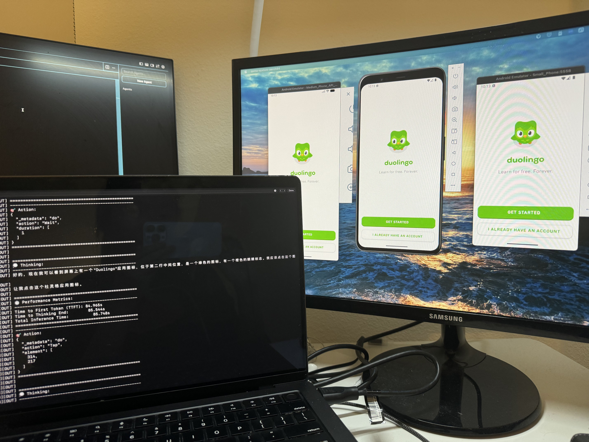

Why this project exists
“Mobile end agents” look magical in demos, but the gap between an impressive open-source prototype and something users can rely on (and pay for) is mostly engineering: concurrency, latency, cost control, safety, and operational boundaries. I forked Open-AutoGLM to build a more production-minded variant: global-autoglm.
The real “product” problems (not the demo problems)
My initial requirements doc was blunt: users don’t buy a cool agent—they buy speed, reliability, and predictable behavior. The biggest gaps I saw in the original stack were:
- Concurrency + isolation: the codebase is device-isolated by design, but typical usage still feels serial from an operator’s perspective.
- Response latency: slow turn-time breaks the illusion of control and kills retention.
- Persona separation: different agents need different “voices” and constraints.
- Multi-turn memory: without long-horizon memory, conversations reset and the agent repeats itself.
- Safety boundaries: NSFW/PII boundaries must be explicit, auditable, and enforceable.
- Cost / tokens: chain-of-thought verbosity and inefficient loops can make unit economics impossible.
The first monetizable improvement: multi-device parallelism
One practical requirement was operating multiple phones from a single machine. The runtime model is
1 device == 1 process, so the simplest reliable parallelism is to spawn a process per device and stream logs with prefixes.
That became scripts/run_multi_devices.py in my fork.
Code: run_multi_devices.py
# Same task on 3 devices (comma-separated), max 2 in parallel python scripts/run_multi_devices.py --devices "A,B,C" --task "Open Chrome and search for wireless earphones" --max-parallel 2 # Devices from file + per-device tasks from JSON mapping python scripts/run_multi_devices.py --devices-file devices.txt --tasks-json tasks.json
Latency and “operator experience” changes
To improve responsiveness, I focused on three levers that matter in production:
- Model routing: using faster/cheaper endpoints when the task is simple, and reserving stronger models for complex screens.
- Prompt discipline: reduce verbose reasoning, keep the agent’s “think” concise, and enforce one executable action per step.
- Timing knobs: expose and tune delays/timeouts so retries don’t feel like “the agent is stuck.”
What I learned about monetization
The monetizable features aren’t flashy—they’re the boring things customers ask for immediately: predictable throughput, clear failure modes, safety controls, and cost transparency. The biggest mindset shift was treating the agent like an operational system (SLOs, logs, retries, bounded behavior), not a chat toy.
What’s next
- Memory: long-horizon preference + conversation state with user-visible edit/delete controls.
- Better UI grounding: reduce hallucinations on dense icon grids via app/icon RAG and stronger UI element localization.
- Policy enforcement: real, testable safety gates for sensitive operations and content boundaries.
- Cost controls: token budgeting, shorter plans, and caching of repeated UI interpretations.